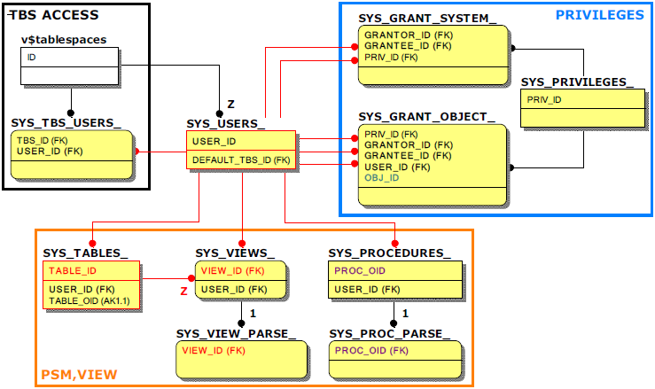

Real-time monitoring is not necessary, but elements frequently identified during the operation include 'user's access to the tablespace', 'system/object authority', and 'schema object'. In the case of schema objects, PSM, and views are the cases.
In order to understand related information, the relationship between the meta table and performance view in which only key columns to be referenced in the join query is referenced is as follows.

Please note that the column names of other objects corresponding to the object number OBJ_ID column (green) in SYS_GRANT_OBJECT_ are different depending on the object.
Examples include TABLE_ID (red), VIEW_ID (red), and PROC_OID (purple) columns.
In addition, most database objects have a separate meta table corresponding to them, but in the case of views, they are managed together with tables, so specific information such as the name of the view must be checked in SYS_TABLES_. SYS_VIEWS_ stores only the view compile status. (That is, VIEW_ID of SYS_VIEWS_ is the same as TABLE_ID of SYS_TABLES_.)
Main Meta Tables
SYS_TBS_USERS_
This is a meta table that contains a list of tablespaces accessible to the user
SYS_PRIVILEGES_
This is a meta table that stores the authority number (PRIV_ID) and the authority name (PRIV_NAME) for system authority and object authority.
SYS_GRANT_SYSTEM_
This is a meta table that stores the authority number (PRIV_ID) for the system authority granted by the user.
SYS_GRANT_OBJECT_
This is a meta table that stores the authority number (PRIV_ID) and object information for the object authority granted by the user. Through the object number (OBJ_ID), detailed information of the object can be checked.
SYS_VIEWS_, SYS_VIEW_PARSE_
This is a meta table that stores only the compiled state of the view. The view creation statement can be confirmed through SYS_VIEW_PARSE_.
SYS_PROCEDURES_, SYS_PROC_PARSE_
This is the meta table that stores detailed information about PSM (Procedure, Function, Typeset). The creation statement corresponding to each PSM can be confirmed through SYS_PROC_PARSE_.
{kind=link}